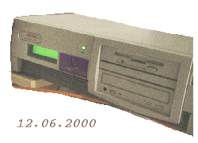

|  |
| El nuevo servidor de LinuxFocus en Amsterdam |
¿Qué le ha pasado al servidor de LinuxFocus?. Posiblemente hayais notado
que LinuxFocus desapareció de la web aproximadamente la primera quincenade Junio.
El servidor principal dejó de estar accesible, aunque la mayor parte de los
mirrors funcionaban perfectamente. Nuestro servidor principal, localizado en
España sufrió severos problemas. Dado que no estaba muy claro si podrían
solucionarse, hemos construído una máquina de repuesto a partir de piezas
sueltas, pero no ha sido tan fácil encontrar un nuevo ISP para alojar la
máquina.
El tiempo y esfuerzo que muchos voluntarios dedican a LinuxFocus valdría bastante
dinero si fuera comercializada, pero esa no es la idea. LinuxFocus pretende seguir
siendo una revista abierta, y esperamos que mucha gente siga disfrutando
leyendo y aprendiendo cosas sobre Linux.
El ancho de banda ocupado por LinuxFocus es relativamente grande, y dado que no
tenemos ingresos, necesitamos algún tipo de sponsor. Resulta muy
fácil encontrar un ISP que ve en esto una ocasión más para hacer un buen
dinero colocando banners con anuncios en cada página, pero incapaces
de darse cuenta del verdadero sentido del software libre y el trabajo de la
gente involucrada en ello.
La comunidad Linux es bastante grande, pero a la vez es muy vulnerable,
porque no dispone de las enormes sumas que manejan las grandes compañias,
que pueden financiar, por ejemplo, grupos de presión para lograr cambiar las
leyes en el sentido que les resulta conveniente. Las propuestas para ley de
patentes en Europa (ver
petition.eurolinux.org)
 son un ejemplo más de este tipo de situaciones, donde las leyes apoyan el
monopolio de un reducido grupo de empresas poderosas, que no el interés general
del público.
son un ejemplo más de este tipo de situaciones, donde las leyes apoyan el
monopolio de un reducido grupo de empresas poderosas, que no el interés general
del público.
Afortunadamente, aún quedan personas razonables en el mundo, y LinuxFocus dispone
de un nuevo hogar en Amsterdam (Holanda).
Netsystem.nl suele proporcionar servicios
de internet a empresa. Poseen una muy uena conectividad a uno de los puntos
de mayor tráfico mundial de internet. Son una opción a considerar si
estás buscando un ISP para una empresa en Holanda.
 Imágenes pseudo 3D con Gimp, por Andre Pascual
Displays LCD por el puerto serie,
por Guido Socher
Desarrollando aplicaciones Gnome con Python
(Parte I), por Hilaire Fernandes
Virtual Network Computing, o VNC,
por Georges Tarbouriech
Introducción a LDAP bajo Linux , por
Atif Ghaffar
Introducción al módulo XML::XSLT para perl,
por Egon Willighagen
Instalando los paquetes Debian de LinuxFocus,
por Egon Willighagen
Imágenes pseudo 3D con Gimp, por Andre Pascual
Displays LCD por el puerto serie,
por Guido Socher
Desarrollando aplicaciones Gnome con Python
(Parte I), por Hilaire Fernandes
Virtual Network Computing, o VNC,
por Georges Tarbouriech
Introducción a LDAP bajo Linux , por
Atif Ghaffar
Introducción al módulo XML::XSLT para perl,
por Egon Willighagen
Instalando los paquetes Debian de LinuxFocus,
por Egon Willighagen
¿Cómo podemos borrar un fichero llamado "-xx"? Obviamente se puede usar un
gestor de ficheros gráfico para hacerlo, pero ¿Cómo hacerlo con el comando
rm?
rm interpretará "-xx" como una opcion porque comienza con un
guión. Hay dos formas de evitar eso:
|
© 1999 LinuxFocus Página de contacto con LinuxFocus |